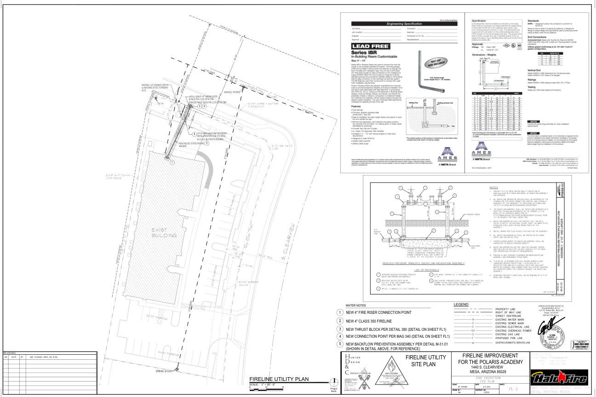
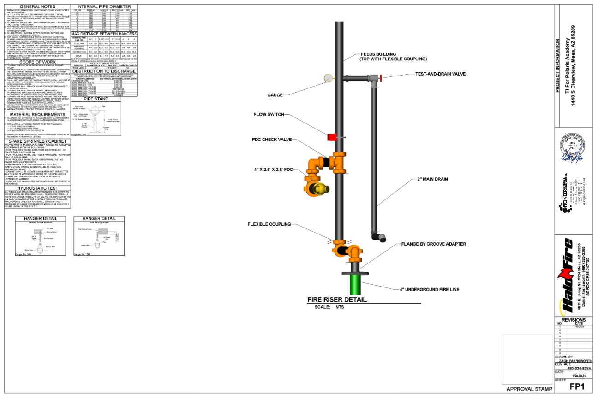

Pipe direction and grade are now separate, source-gated facts
Solid plan geometry is the exact exported AutoSPRINK pipe model registered to the approved/as-built FP2. All 59 on-plan hydraulic nodes use the seven-line AutoSPRINK glyph's exact 3D source leader tips. Violet arrows follow 65 exact physical source-span routes. The completed source chain proves whole-network hydraulic flow. The drainage solver separately finds nine unique trapped wet-pipe basins from ten downhill candidates: one shared 25.035649-gallon basin and eight smaller upright-ended basins, totaling 37.962174 gallons. Exact basin geometry is proven; source-approved drain disposition remains held.
Same-project source continuity - semantic pass, exact endpoint hold
The final FL3 identifies the new four-inch fire-riser connection point. The completed FP1 detail continues the four-inch underground fire line through the flange, coupling, riser assembly, test-and-drain, two-inch main drain, and building feed. FP2 states that the underground line enters the side of the building and the riser/backflow are inside. The hydraulic reports continue that building feed through node 116. These are source-backed semantic transitions, not invented centerline geometry.


Approved FP2 + exact pipe model + governed direction layers

Wet-pipe trapped-basin correction register
Volumes use the source pipe centerlines and hydraulic-report internal diameters. Eight sub-five-gallon basins terminate at uprights, so pendent-removal is not credited; their code-basis-bound candidate is a one-half-inch nipple and cap or plug. The shared 25.035649-gallon basin is intentionally not sized until the project-edition primary text for that tier is locally bound.
| Basin | Source low point(s) | Volume | Termination | Correction / status |
|---|
Acceptance boundary
This proves the completed project's hydraulic report graph, all 59 on-plan source node connection points, 65 exact rigid pipe-span routes, all 29 calculated sprinkler terminals, and nine exact wet-pipe trapped basins. It does not treat hydraulic-flow arrows as drainage arrows. The nearest extracted fire-line pipe endpoint remains 718.821 inches from node 116, so exact cross-drawing endpoint geometry stays false even though source intent and hydraulic direction are proven. The eight small-basin drain additions are correction candidates, not approved or installed source facts. The 25.035649-gallon shared basin is not sized without the primary project-edition rule. Proper layout, fabrication, and field release remain fail-closed until every basin has a source-approved drain method and destination.